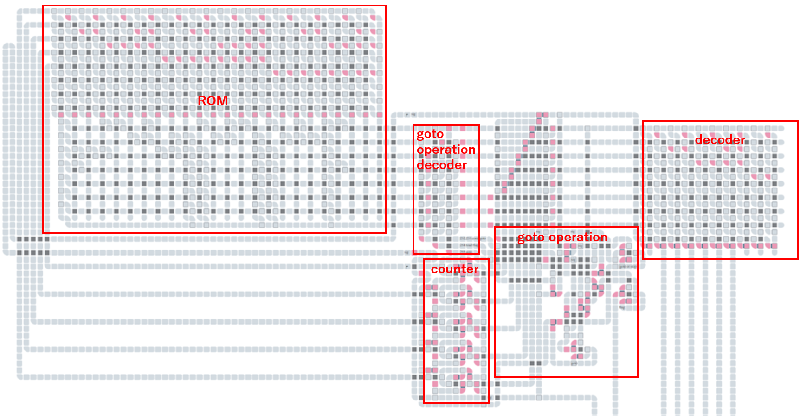
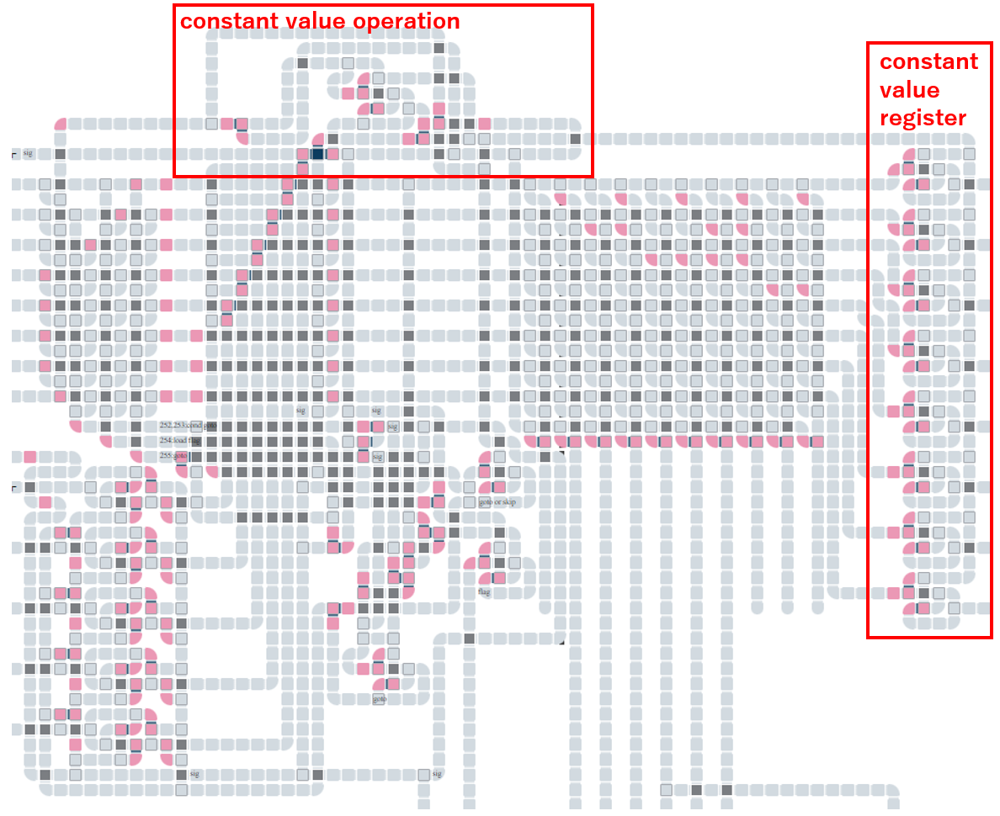

この記事はセルオートマトンによるCPU作成連載記事の21本目です。(2023/01/30)
今回は前回のフィボナッチ数列に改良を加えていきます。
ver.9はROMを追加します。
前回までのフィボナッチ数列の回路では、処理する内容は制御回路に直接書かれていました。これをROMに移譲し、命令はバイトコードで表現するようにします。これまでの制御回路ではカウンタの値から処理内容を判定していましたが、制御回路ではバイトコードをデコードするようにします。
プログラムカウンタは命令のアドレスを表し、ROMにアドレスとして渡すようにしています。

バイトコードと処理内容の対応は次のようにしています。CPUでいう命令セットというものになります。
| コード | 処理内容 |
|---|---|
| 1 | レジスタAにシグナルを流す |
| 2 | レジスタBにシグナルを流す |
| 3 | レジスタCにシグナルを流す |
| 4 | 出力制御0にシグナルを流す |
| 5 | 出力制御1にシグナルを流す |
| 6 | 出力制御2にシグナルを流す |
| 252 nnn | フラグレジスタが0の場合はジャンプ(ジャンプ先は次のコードの値) |
| 253 nnn | フラグレジスタが1の場合はジャンプ(ジャンプ先は次のコードの値) |
| 254 | 繰り上がりフラグをフラグレジスタにロード |
| 255 nnn | 無条件にジャンプ(ジャンプ先は次のコードの値) |
フィボナッチ数列を計算するコードは次の通りになります。ver.8の処理内容と同じです。
| アドレス | コード | 処理内容 |
|---|---|---|
| 0 | 255 12 | 12にジャンプ |
| 2 | 4 5 | 出力制御0と1にシグナルを流す |
| 4 | 1 2 3 | レジスタAとBとCにシグナルを流す |
| 7 | 4, 6 | 出力制御0と2にシグナルを流す |
| 9 | 254 | 繰り上がりフラグをフラグレジスタにロード |
| 10 | 253 2 | フラグレジスタが立っていれば2にジャンプ |
| 12 | 3 1 | レジスタAとCにシグナルを流す |
| 14 | 254 | 繰り上がりフラグをフラグレジスタにロード |
| 15 | 253 2 | フラグレジスタが立っていれば2にジャンプ |
| 17 | 3 2 | レジスタBとCにシグナルを流す |
| 19 | 255 9 | 9にジャンプ |
汎用的な処理ができるように書き換えてきた結果、回路が大きくなってきて、処理速度が遅くなってきました。このセルオートマトンの世界では単純に回路面積が広いほど処理速度が遅くなります。
オーバーフロー時の処理が早く見られるように233から始まるようにしています。
次のバージョンでは定数を命令の中に埋め込めるようにします。
これまでのバージョンでは、オーバーフロー時に1にリセットするときには、「1にリセット」専用回路を用意していました。これを任意の数にリセットできるようにします。数は命令の中に埋め込みます。

命令セットには次を追加しました。
| コード | 処理内容 |
|---|---|
| 248 nnn | 固定値レジスタに特定の値をセット(値は次のコードの値) |
フィボナッチ数列を計算するコードは次の通りになります。ver.9に比べ1という値をセットする処理が増えています。
| アドレス | コード | 処理内容 |
|---|---|---|
| 0 | 255 14 | 14にジャンプ |
| 2 | 248 1 | 固定レジスタに1をセット |
| 4 | 4 5 | 出力制御0と1にシグナルを流す |
| 6 | 1 2 3 | レジスタAとBとCにシグナルを流す |
| 9 | 4, 6 | 出力制御0と2にシグナルを流す |
| 11 | 254 | 繰り上がりフラグをフラグレジスタにロード |
| 12 | 253 4 | フラグレジスタが立っていれば4にジャンプ |
| 14 | 3 1 | レジスタAとCにシグナルを流す |
| 16 | 254 | 繰り上がりフラグをフラグレジスタにロード |
| 17 | 253 4 | フラグレジスタが立っていれば4にジャンプ |
| 19 | 3 2 | レジスタBとCにシグナルを流す |
| 21 | 255 11 | 11にジャンプ |
制御回路の中央あたりがごちゃごちゃしてしまい、わけがわからなくなってきました。